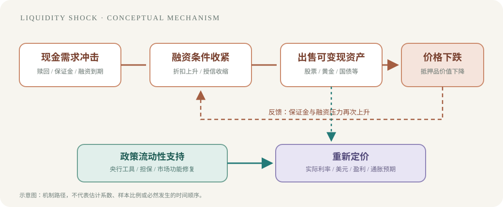
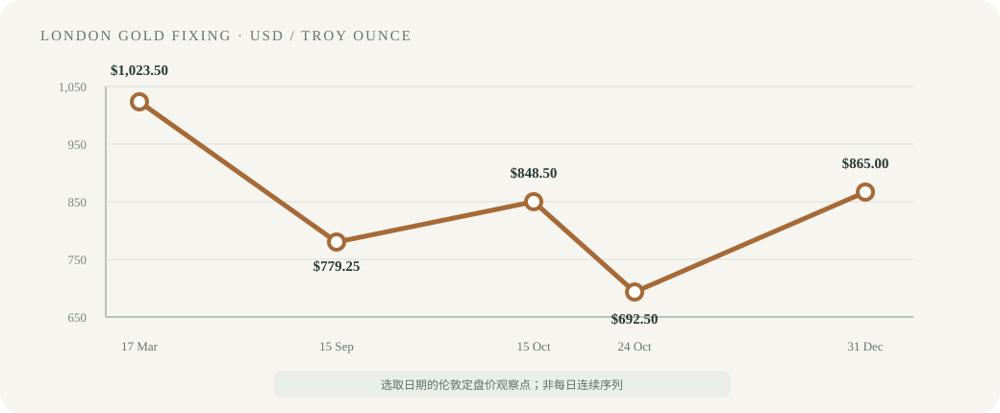
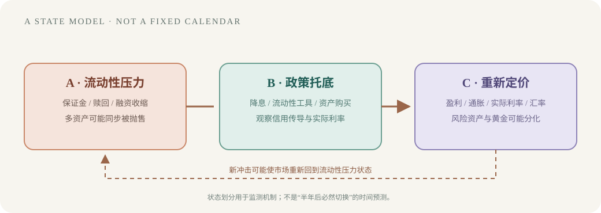

结论先行原文抓住了真实的流动性机制，却把它简化成固定的资产排名和择时信号。更可靠的分析起点不是“上半场／下半场”，而是区分流动性风险、偿付能力风险与购买力风险。
01 · 为什么避险资产也会在危机里下跌？
黄金的长期组合功能与危机某个交易日的价格表现，是两个不同问题。当机构必须当天补保证金、应对赎回或偿还短期融资时，它首先需要的是可支付现金，而不是一项长期看起来有价值的资产。
世界黄金协会2020年3月19日的同期评论指出，黄金在当时仍是高流动性资产，3月日均交易额超过2,600亿美元；在跨资产大规模清算、杠杆仓位和规则化交易共同作用下，黄金也可能被出售以筹集现金。该文同时指出，黄金ETF当月资金流仍为净流入，说明“价格下跌”和“投资者全面撤离黄金”不是一回事。[S3]
美联储记录到，2020年3月投资者大量出售长期美国国债和机构MBS，转向短期限、更具流动性的资产；长期国债收益率在3月中旬反常上升，买卖价差显著扩大。[S4] BIS也记录了货币市场基金赎回、杠杆投资者因保证金要求平仓，以及多类资产同步承压。[S5]
关键判断：在无序清算阶段，资产的即时可变现性可能压过它的长期避险属性。这不等于黄金长期避险功能失效。
02 · 先把三种风险分开
流动性风险：有资产，但不能及时变成钱
流动性风险关心的是：需要支付时，资产能否在合理时间内、以合理价差变成可用资金。基金集中赎回、杠杆投资者追加保证金、回购融资收紧、房地产买家减少，都可能制造流动性压力。
偿付能力风险：资产价值不足以覆盖负债
偿付能力风险关心的是资产负债表最终能否覆盖债务。房价下跌本身不等于立即违约；但若家庭同时遭遇收入中断、高杠杆和刚性月供，账面损失就可能转化为现金流危机。
购买力风险：名义现金还在，实际购买力下降
现金没有明显的市场报价波动，但仍有通胀、汇率、银行信用、存款保障范围和支付渠道风险。因此，“现金为王”应理解为危机时优先保障近期支付能力，而不是认为所有现金类产品都等同于存款或永久保值。

03 · 2008年黄金：回撤真实，原文时间线错误
采用同一口径的伦敦黄金定盘价，2008年3月17日约1,023.50美元/盎司；9月15日雷曼申请破产当天约779.25美元；10月15日约848.50美元；10月24日才到约692.50美元。[S1]
| 日期 | 伦敦黄金定盘价（美元/盎司） | 含义 |
|---|---|---|
| 2008-03-17 | 1,023.50 | 春季高点附近 |
| 2008-09-15 | 779.25 | 雷曼申请破产当天 |
| 2008-09-30 | 897.00 | 9月末观察点 |
| 2008-10-15 | 848.50 | 雷曼事件约一个月后 |
| 2008-10-24 | 692.50 | 秋季低点 |

按表内端点计算，3月17日至10月24日峰谷回撤约32.3%；9月15日至10月15日反而上涨约8.9%；9月15日至10月24日下跌约11.1%。因此，原文把春季高点与10月低点拼成“雷曼倒闭当月一个月跌掉三分之一”，时间范围不成立。
更重要的反证是：世界黄金协会按LBMA黄金价格口径统计，黄金2008年全年收益约为+4.3%，年末约869.75美元/盎司。[S2] 峰谷回撤、危机窗口收益和日历年度收益是三个不同指标，不能用一个阶段的最大回撤代替全年表现。
04 · 股票与房地产：价格风险不等于流动性风险
上海证券交易所历史统计资料显示，上证综合指数2007年最高6,124.04点（10月16日），2008年最低1,664.93点（10月28日），按两个极值计算回撤约72.8%。[S6] 这只能代表上证综合指数的特定区间，不能代表全球股票或每位投资者的实际收益。
美国Case-Shiller数据表明，全国房价指数从2006年7月峰值到2012年2月低点下跌27.4%，20城市指数下跌35.1%。[S7] 这是房价指数，不是每套房子的成交周期、折价率或出售概率。房地产价格调整、交易流动性和家庭偿债能力必须分别衡量。
中国市场也不能概括为全国房地产完全冻结。国家统计局数据显示，2026年1—10月房地产开发投资同比下降21.6%，新建商品房销售面积下降13.7%，销售额下降14.3%；同期二手住房网签交易面积同比增长11.4%。[S8] 70城价格数据还显示明显城市差异：2026年10月上海新建商品住宅同比指数为102.7，郑州为95.8、昆明为95.7。[S9]
05 · 现金也不是单一资产类别
银行存款、短期国库券、货币市场基金、银行理财和外币现金的风险结构不同。BIS记录，2020年3月底美国优质货币市场基金遭遇约1,600亿美元赎回，约占相关基金资产的15%；杠杆投资者被迫出售头寸满足保证金要求，国债等资产也承压。[S5]
所以，现金储备应关注发行人、保障范围、支取条件、币种和期限。名称中带有“现金管理”不等于银行存款；短期国债也仍有二级市场价格波动。真正的“现金第一”是确保近期负债能够被可靠支付。
06 · 从两半场改成三个可观察状态
2008年的政策时间线并非等到某个“下半场”才开始宽松。美联储2007年9月已经开始降息；2008年10月8日六家央行协调降息，10月29日联邦基金利率目标降至1%；11月25日美联储宣布计划购买最多1,000亿美元机构债务和5,000亿美元机构MBS。[S10] [S11]

状态A：融资与流动性压力
监测融资成本、保证金、基金赎回、回购市场、国债买卖价差和信用利差。多个市场同时出现融资收缩和被迫出售时，短期支付能力比预测资产底部更重要。
状态B：政策托底与重新定价
观察央行是否提供流动性工具、政策利率变化、实际利率和美元走势，以及信用市场是否恢复功能。政策宣布不等于资金已经传导到企业和家庭。
状态C：盈利修复、通胀与货币再定价
观察就业、企业盈利、信用扩张、实际利率、通胀预期和财政可持续性。黄金可能受实际利率和货币预期影响，股票可能受盈利和折现率影响，二者既可能反向，也可能同涨。
三个状态并非线性推进。新的融资冲击可能让市场从B重新回到A；通胀冲击也可能使政策宽松空间受限。
07 · 黄金与股票分家，为什么不是可靠的发令枪？
股票跌、黄金涨，可能来自实际利率下降、美元走弱、避险需求、央行购金或地缘风险；股票跌、黄金也跌，则可能来自美元现金需求、保证金追缴、去杠杆、实际利率上升或拥挤仓位平仓。同一个价格现象可以由不同机制产生。
要将相对走势变成择时策略，必须预先定义指数和币种、观察频率、滚动窗口、量化阈值、持续时间、交易成本、滑点，以及样本内外的胜率、误报率、漏报率和最大回撤。原始观点没有提供这些定义和回测，所以目前只是经验叙事，不是经过验证的交易系统。
08 · 2027年7—9月危机预测：风险存在，不等于可以精确择时
原文提出2027年7—9月发生全球金融危机、2027年9月黄金见底、2028年初放水。要评估它，首先必须定义“全球金融危机”究竟是全球衰退、银行系统性危机、股市回撤、主权债市场失灵，还是跨境美元融资冻结。
IMF 2026年10月《世界经济展望》的基准预测为全球经济2026年增长3.1%、2027年增长3.4%，同时强调冲突升级、AI预期重估、贸易紧张和财政脆弱性等下行风险。[S12] 这不是危机不会发生的保证，也没有给出2027年第三季度的危机时间预测。
IMF 2026年10月《全球金融稳定报告》指出，金融市场截至报告分析时点仍有韧性，但金融稳定风险偏高；AI相关资产估值调整、主权债收益率冲击、网络风险，以及非银行金融机构流动性错配和私募信贷杠杆，可能放大市场压力。[S13]
这些资料支持“需要关注脆弱性”，不支持“已经知道危机发生月份”。在没有公开模型、输入数据、参数、历史回测和概率校准的情况下，2027年具体月份预测应标记为未验证，而不是投资前提。
09 · 更可执行的家庭风险管理框架
- 列出未来12个月的刚性支出，并测试收入中断3、6、12个月时的现金缺口。
- 区分存款、货币基金、银行理财和短期债券，不凭产品名称判断安全性。
- 高杠杆家庭优先检查债务服务能力；房产账面净值不能替代应急储备。
- 不要用短期借款或未来一年必须支出的钱持有高波动资产。
- 黄金可以作为分散配置的一部分，但不产生票息；实物黄金还有买卖价差、保管和变现渠道问题。
- 房地产同时观察成交量、挂牌库存、成交周期、租金、空置率和区域就业，不只看挂牌报价。
| 监测维度 | 指标 | 所回答的问题 |
|---|---|---|
| 融资压力 | 美元融资利差、回购利率、跨币种基差 | 融资链条是否收缩？ |
| 市场流动性 | 买卖价差、市场深度、基金赎回 | 是否出现被迫出售？ |
| 信用风险 | 高收益债利差、违约率、银行信用利差 | 压力是否传导到偿付能力？ |
| 杠杆压力 | 保证金追缴、融资余额、抵押品折扣 | 是否发生强制去杠杆？ |
| 宏观增长 | 就业、PMI、新订单、贸易与工业生产 | 金融冲击是否进入实体经济？ |
| 黄金定价 | 实际利率、美元、ETF流量、期货净持仓 | 避险需求还是仓位清算占主导？ |
10 · 最终结论与未知
已有证据支持：2008年黄金经历明显峰谷回撤，但原文错误压缩了时间线；黄金2008年全年仍有约4.3%的正收益；2020年3月黄金、国债等资产都可能在跨资产清算中承压；房地产价格、交易流动性和偿债能力是不同变量。
证据不足：四类资产存在跨危机固定排名；黄金与股票同跌就意味着“上半场”；两者反向走就是“下半场”；2027年7—9月必然发生危机、黄金9月见底、2028年初必然放水。
仍然未知：黄金—股票分化信号在多个危机样本中的胜率；2027年预测背后的模型与校准；不同家庭杠杆、负债期限和币种下的合理现金储备；中国不同城市和房屋类型在流动性冲击中的真实退出周期。
最终判断金融危机中最重要的不是猜中哪种资产在某个阶段排名第一，而是避免融资断裂和现金流不足迫使自己在最差时点出售资产。流动性、偿付能力和购买力必须分别管理；“两阶段”可以作为叙事入口，但不能替代数据、模型和反证。
参考资料与原始来源
- Westmetall，Gold London Fixing，2008年历史数据。查看原始价格表
- World Gold Council，Gold and central bank reserve management during the Covid-19 pandemic，2020-05-18。查看研究
- World Gold Council，Investment Update: Gold prices swing as markets sell off，2020-03-19。查看同期评论
- Federal Reserve，Monetary Policy Report — June 2020, Part 2，2020-06-12。查看美联储报告
- BIS，A global sudden stop，Annual Economic Report 2020。查看BIS章节
- Shanghai Stock Exchange，SSE Statistics Annual：Data of SSE Composite Index, 1992–2020。查看交易所统计年鉴
- S&P Dow Jones Indices，Case-Shiller历史峰谷数据，2017-04-25。查看指数资料
- 国家统计局，2026年1—10月份全国房地产开发投资和销售情况，2026-11-17。查看官方统计
- 国家统计局，2026年10月份70个大中城市商品住宅销售价格变动情况，2026-11-16。查看官方统计表
- Federal Reserve，FOMC policy-rate history。查看政策利率时间线
- Federal Reserve，Timeline: Balance Sheet Policies。查看资产负债表政策时间线
- IMF，World Economic Outlook: Resilience Under Strain, Urgent Choices，2026-10。查看WEO
- IMF，Global Financial Stability Report: Resilience, Risk, and Transformation，2026-10。查看GFSR
研究边界
本页是基于公开资料对一段市场观点的部分核验，不是完整的跨资产日频回测，也不是个人投资建议。黄金精确收益受报价基准、交易时区、币种和起止日期影响；房地产指数不能代替具体房屋的成交情况。没有公开模型、参数和回测的具体月份预测，不能被视为经过验证的预测。